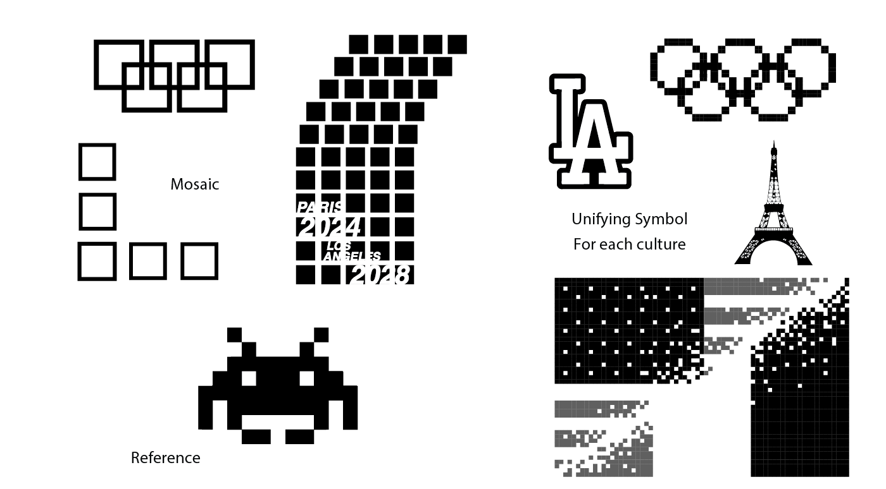
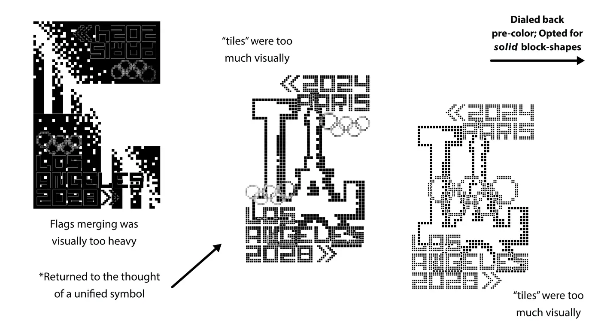
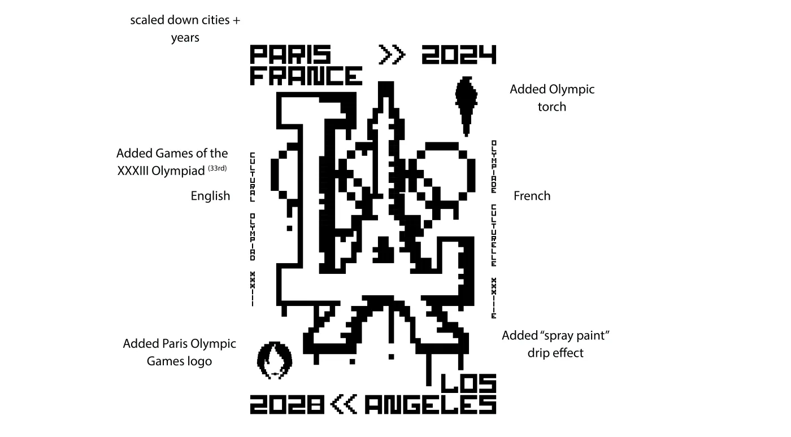
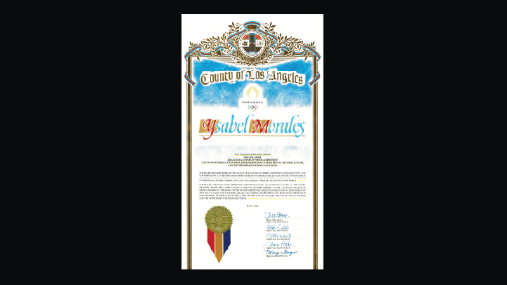
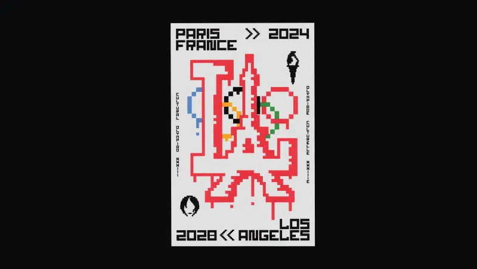

Cultural Olympiad
One of 24 posters selected from students across four art schools (ArtCenter, CalArts, EPSAA Paris, and Otis) for the official 2024 Cultural Olympiad Poster Competition, put together by the City of Paris and LA County Department of Arts and Culture. The goal was to commemorate the ceremonial passing of the torch from Paris to Los Angeles ahead of the 2028 Games.
Problem
Making one poster that works for two cities, multiple languages, and a global audience without losing what makes each unique. It needed to get people's attention, motivate, encourage, inspire, and pay homage to artists who came before. That's a lot to put on one image.
Design Intent
Flash Invader had been placing ceramic tile mosaics on walls across Paris and cities worldwide since the late 90s, the idea was getting art off museum walls and into the street. That felt like the right reference to me when this competition was introduced to me. I didn't want to literally show a torch being passed. Instead I took two icons that need no translation, the "LA" pulled from our beloved Dodger logo (since the team moved to California in 1958) and Paris' Eiffel Tower, and reworked them into a single unified symbol.
The cities becoming one image felt like a more honest way to show what that olympic succession meant. It was less of a Hand-over to me, and more like a handshake. The tile mosaic lives as a conceptual reference rather than a literal one, keeping the design flat, clean, and readable at scale.


Process
Full scope from concept to final poster — After 2 weeks of visual research, sketching, scanning and iterating, every decision came back to the same question: would someone who doesn't know design get this immediately? Designing for a public audience meant being really honest about what needed to be there and what didn't. Rounds of editing, and critiques, and a mostly digital process led to reprint after reprint.
Sketching Symbolism Research Iterative Design Material Research Print




Outcome
Exhibited at Jardin Villemin in Paris, digitally on the City of Paris website, at The Music Center's Jerry Moss Plaza, and at LA City Hall's Bridge Gallery. Designing for a public audience at this scale pushed me to think more carefully about readability, accessibility, and what it means to make something that belongs in a shared space. It also taught me to advocate for my voice and style. A number of elements in the final design were not popular among professors and peers when it was being shown for critique week after week, but in the end, they were competition-winning decisions.

